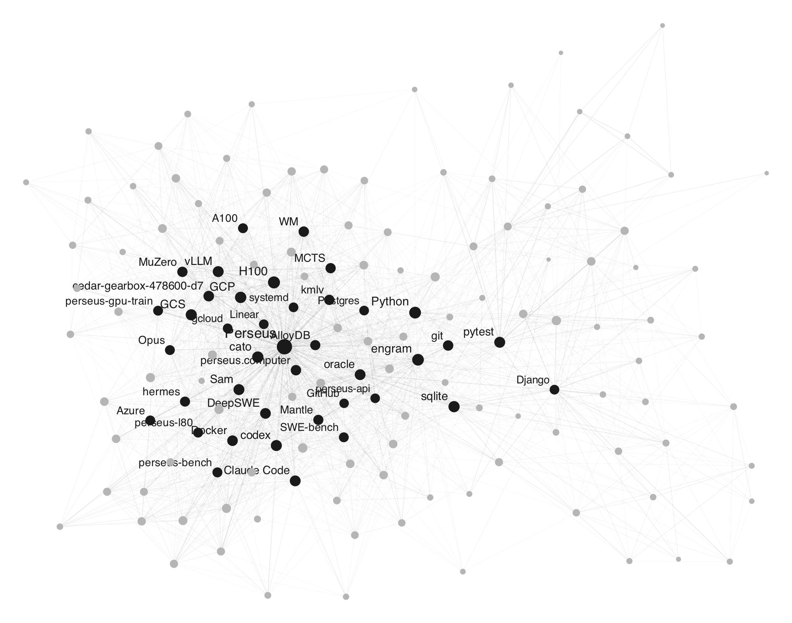

oracle
Every coding agent you run forgets everything the moment the session ends. oracle doesn't.
A single local daemon watches your Claude Code and codex sessions, extracts a bi-temporal fact graph — decisions, gotchas, benchmarks, the reason you chose X — and serves it back to any agent in milliseconds. Search, judging, and embeddings run on bundled local models; the only LLM you bring is for fact extraction, and it can be a local one.

--as-of · cited
answers · sub-10ms local latency.Install
curl -fsSL https://raw.githubusercontent.com/efficientsystemsinc/oracle/main/install.sh | sh
# bring any OpenAI-compatible endpoint for extraction:
export ORACLE_LLM_URL=https://api.openai.com/v1 ORACLE_LLM_KEY=sk-... ORACLE_LLM_MODEL=gpt-5.5
# or fully local — no API key, no cloud at all:
export ORACLE_LLM_URL=http://localhost:11434/v1 ORACLE_LLM_MODEL=qwen3
oracle init && oracle up # watch sessions, serve HTTP on :4141Ask it things
oracle query "pgbouncer statement cache" # the gotcha from three weeks ago
oracle query --as-of 2026-06-20 "prod topology" # what was true then
oracle brief --repo myproject # standing brief for a new agent
oracle ask "why did we move off CloudSQL" # cited answer with confidence